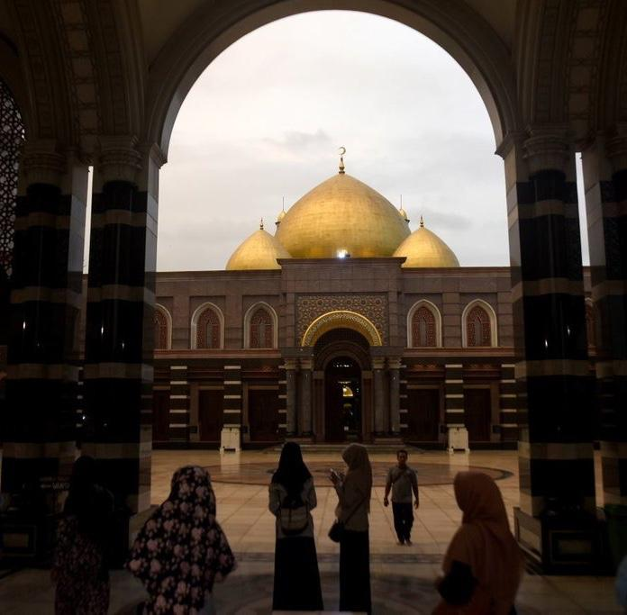
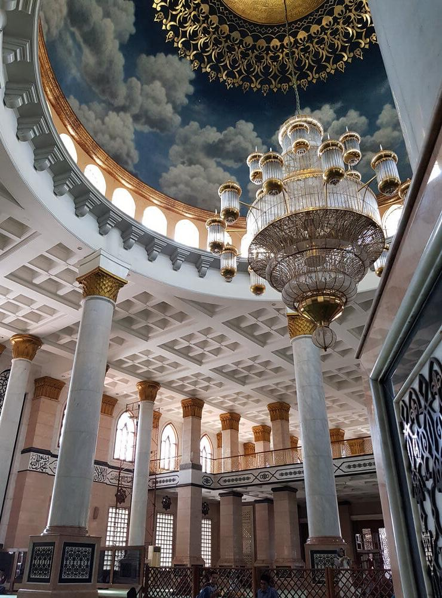

Untuk tempat wisata di depok yang pertama sebagai ikon dari kota depok adalah masjid kubah mas. Masjid ini dikenal juga dengan nama Masjid Dian Al-Mahri. Bangunan yang mempunyai kubah berlapiskan emas ini diresmikan pada tanggal 31 Desember 2006, tepat setelah pelaksanaan shalat idul adha 1427 H. Pendiri masjid bernama Ibu Hj. Dian Juriah Maimun Al-Rasyid serta Bapak H. Maimun Al-Rasyid.
Masjid ini masih dalam pengembangan menjadi kawasan terpadu bernama Islamic Center Dian Al-Mahri. Kemegahan masjid disebut-sebut sebagai yang paling megah di kawasan Asia Tenggara dan mampu menampung sampai dengan 20.000 jamaah.Kini Masjid Kubah Mas menjadi salah satu obyek wisata religi yang selalu ramai kunjungan, terlebih ketika akhir pekan atau masa liburan setidaknya ada 50.000 pengunjung yang datang.
pos security kubah emas, Jl. Raya Meruyung, Meruyung, Kec. Limo, kota, Jawa Barat 16515.
Tempat yang sangat bagus dan menjadi salah satu saksi akad nikah saya dengan Annisa Trihapsari.
"the most beautifull and most expensive mosque that builded at West Java."
Desain hebat dan suasana menyenangkan.